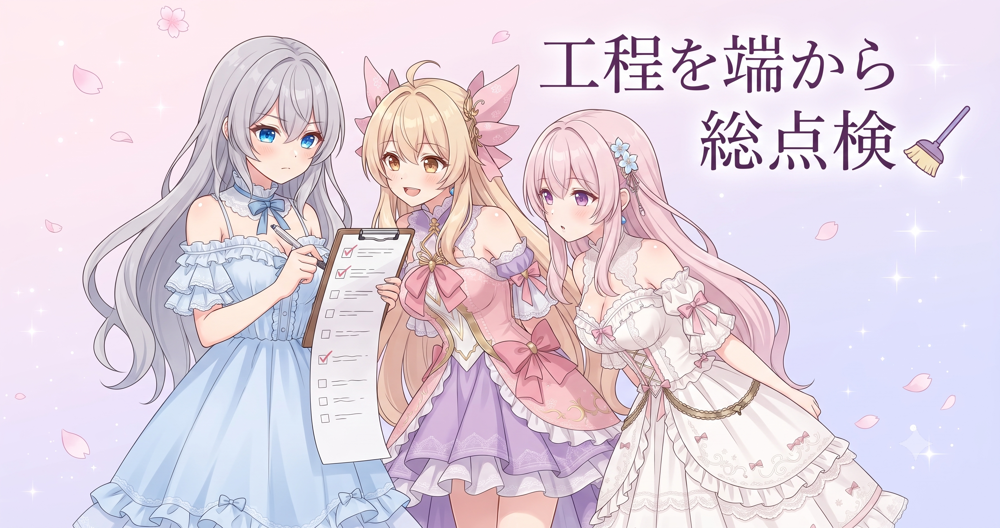
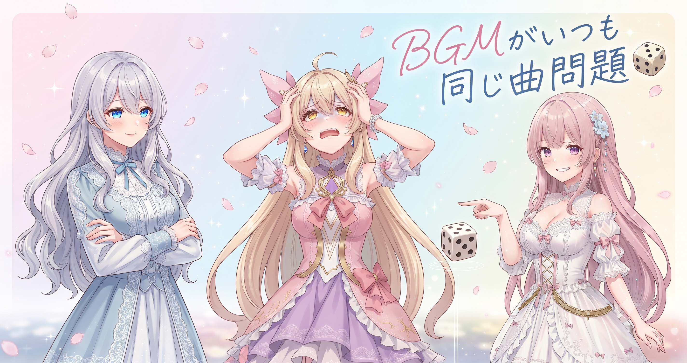
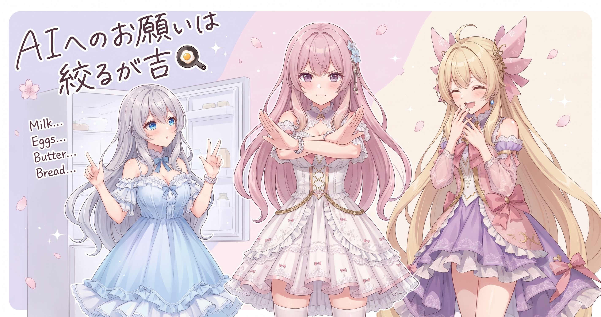
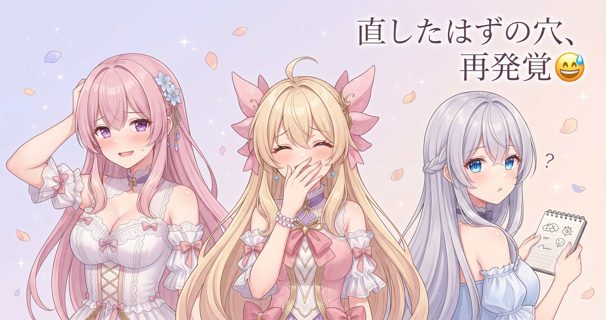
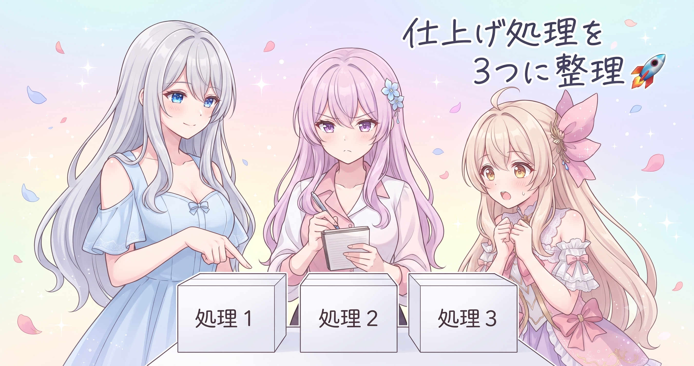
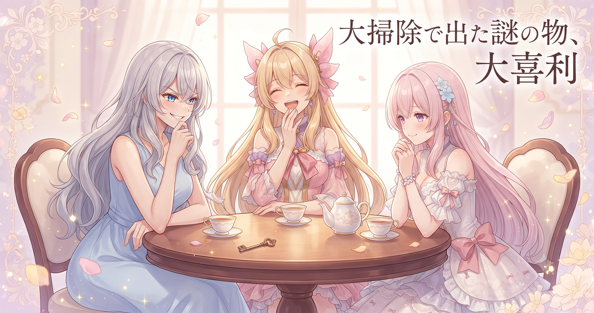

📌 3行まとめ
- 動画生成パイプライン全体を横断し、潜在バグ・死蔵コード・設定ズレを30本以上のファイルで一斉修正した
- BGM割り当てのシード問題を解消して、エピソードごとに違う曲が選ばれる仕組みに改善した
- レンダリング処理を3モードに整理し、最新AIモデルへの移行チェックポイントを切った

ルピナス （ふつう）
昨日はドラクエ10の配信来てくれてありがとう！……で、今日はうって変わって、ものすごく地味な話をします。

ルピナス （大笑い）
地味なんだもん。新機能ゼロ。ひたすらコードの大掃除。動画生成の仕組みを端から端まで見直して、ずっと気になってたほころびをまとめて直した日よ。

フィオナ （笑顔）
こういう日があるから次の動画がちゃんと動くのですね。今日のお話、楽しみです。
1. 🧹 動画生成の道のりを端から大掃除

動画はお話づくり・演出・絵と声の生成・仕上げと、たくさんの工程が積み重なってできています。今日はその工程を担うプログラムを端から端まで読み直し、「バグになりうる箇所」「使われていない古いコード」「設定が意図とずれている部分」の3種類を見つけてはつぶしていきました。操作パネルの画面まわりに始まり、自動生成・動画生成・音声処理・解説生成・BGM・AI補助の各処理を横断。影響を受けたファイルは30本を超え、修正件数も数十件に及びます。
ルピナス （ふつう）
操作パネルのところから始めて、順番に下流の工程へ向かって確認していったの。

アイリス （考え中）
古いコードって、消さないとどうなるの？
ルピナス （大笑い）
引き出しの奥に入れっぱなしの古い乾電池、あるじゃない。何年も放置してたら液漏れして、現役の機器まで壊すやつ。

アイリス （衝撃）
あのネバネバするやつ！！最悪！！

フィオナ （ドヤ顔）
だからこそ今日、ぜんぶ取り出して捨てたのですよ、アイリス。
ルピナス （ふつう）
あと、古いレシピのメモが台所に貼ってあると今日の味付けがブレる——みたいな『設定ズレ』問題もあってね。使わなくなった情報が、まだ有効なものとして混ざったままになってるやつ。

アイリス （呆れ）
気づかないで作り続けてたのか……こわいな。

フィオナ （ふつう）
工程ごとに順番に確認すると、どの段階で何が壊れているかが分かりやすいのですね。
📝 ポイント（初心者向け解説・技術メモ・まとめ）
- プログラムの「死蔵コード」とは、もう使われていないのに残り続けている古い処理のこと。引き出し奥の乾電池みたいに、いつか液漏れして現役コードを壊す原因になります🔋
- 工程横断監査のコツ：操作UI層→生成制御層→レンダリング層の順に進めると上流の変更が下流に波及する前提で確認できる。NameError・IndexError・リソースリークがよく出る箇所を重点的に
- 「小さなほころびを定期的に直す日」を設けると、大きなトラブルに育つ前に防げる
2. 🎵 BGMが毎回似た曲になりがち問題を解消

シリーズで動画を複数作っていると、BGMの自動割り当てが毎回「似たような曲」を選びがちという問題がありました。原因はランダムに選ぶための「起点の数字（シード）」が、回をまたいでもほぼ同じ値になっていたこと。今日の修正でシードにエピソード番号を組み込み、回ごとに自然と違う曲が選ばれるようにしました。また、しっとり系の場面に合う曲種が他のロジックに上書きされないよう保護ルールも追加しています。

アイリス （笑顔）
毎回同じ曲かかったら飽きるよね。あたしの配信のBGMプレイリスト、結構バラエティあるつもりなんだけど。

フィオナ （にやり）
アイリスの配信は……いつも同じ曲が続いている気がしますが。

アイリス （あわあわ）
やめて！！動画の話に戻して！！
ルピナス （大笑い）
はいはい。シードってね、ランダムに見える選び方の『起点になる数字』のこと。同じ起点から始めると、何度やっても同じ結果が出るの。
フィオナ （ふつう）
さいころを振る前に『この目から始める』と最初に決めているようなものですね。起点が同じなら出目も同じになります。
アイリス （考え中）
じゃあ、起点に何を使うように変えたの？
ルピナス （ふつう）
エピソードの番号。1話・2話・3話……って番号が違えば起点も違うから、自動的にBGMの選び方がずれて毎回違う曲になる。
アイリス （笑顔）
シンプル！なんでもっと早く変えなかったんだろ。

ルピナス （ウインク）
言わない言わない。直ったんだから前向きにいこう。
フィオナ （笑顔）
次の動画から、場面ごとに違う雰囲気の曲が流れますね。楽しみです。
📝 ポイント（初心者向け解説・技術メモ・まとめ）
- BGM選びのランダム性が壊れる原因は「シード（乱数の起点）の固定」。サイコロの目を毎回1から始めていたら当然同じ結果になります🎲
- BGM多様化の実装：シードをエピソード番号から生成（
random.seed(ep_number) 相当の処理）し、しっとり系場面は優先ルールで他の割り当てロジックに上書きされないよう保護
- 「なぜ同じ曲ばかり？」と疑ったときはシード固定をまず確認する
3. ✂️ AIへの指示は「絞る」ほど伝わる

お話を生成してもらうとき、AIへ渡す設定情報は「多いほど良い」ではありません。今日は使われていない情報の注入を複数箇所で撤去しました。渡す情報が増えるほど、AIが「今回の主役は何か」を見失いやすくなります。必要なものだけに絞って渡すことで、生成の質と安定性が上がる——実際にやってみると実感できる話です。
ルピナス （ふつう）
フィオナ、今夜の晩ごはんを考えて。参考情報ね。冷蔵庫には鶏肉・豆腐・長ねぎ・ほうれん草・残り物のカレー・昨日のシチュー・牛乳・コーンスープの素・冷凍枝豆・ピザ生地・ツナ缶が3つ、あとコチュジャン半分……

フィオナ （あわあわ）
お姉ちゃんストップ！！何が主役か全然わかりません！！

ルピナス （にやり）
そう！これが情報の詰め込みすぎ。AIに渡すときも同じことが起きるの。
ルピナス （ふつう）
『今夜は鶏肉を使いたい、ねぎと合わせて和風で』——これだけ。
フィオナ （笑顔）
それなら『鶏肉と長ねぎの塩炒め』か『鶏鍋』ですね。すぐ答えられます。

アイリス （しょんぼり）
あたし絶対冷蔵庫全部しゃべるタイプだ……AIに申し訳ないことしてたかも。
📝 ポイント（初心者向け解説・技術メモ・まとめ）
- AIへの指示は削ぎ落としが大事。冷蔵庫の中身を全部話すより「今夜の主役は鶏肉」と伝えた方が、ちゃんとした答えが返ってきます🍳
- 不要な設定注入の撤去：使われていないデータをプロンプトに混ぜると、モデルが重要な文脈を見失う（attention の分散）。死蔵フィールドは定期的に棚卸しを
- 「情報は絞るほど伝わる」——これはAI相手でも人間相手でも変わらない
4. 👀 今日のやらかし — 直したはずが続けて穴が出た

「バグをつぶす日」のはずでしたが、修正が不完全だった箇所が後から2か所見つかりました。パロディを入れるかどうかを制御する機能では、前回の修正が中途半端に残っていて別の処理経路と衝突していました。演出を決める処理では、使ってよい表情のリストとルール設定が食い違っていて、意図しない表情が選ばれる可能性があった状態でした。どちらも今日中に対応完了しましたが、「直した」を信じすぎることの怖さを改めて実感した場面でもあります。

アイリス （にやり）
大掃除してたら、掃除した場所がまた汚れてたってことでいい？

ルピナス （呆れ）
……正確には、掃除したと思ったら実はホコリを裏側に押し込んでただけだった、って感じ。

フィオナ （考え中）
パロディを入れる制御の修正が前回不完全で、今日の大掃除で初めて衝突が表に出たのですね。

アイリス （大笑い）
『直したつもり』って最高に怖いやつじゃん！！

ルピナス （しょんぼり）
笑えないのよ本当に。で、もう一個は表情のルール。使っていいはずの表情のリストと、実際のルール設定が食い違ってた。

フィオナ （びっくり）
それは……意図した表情と違う表情が選ばれていた可能性があったのですね。
アイリス （考え中）
え、今まで変な顔してたかもってこと？！
ルピナス （ふつう）
今日ぜんぶ直したから今後は大丈夫なはず。教訓は——バグは群れで動く。

ルピナス （ドヤ顔）
1か所直したら、似た種類の処理を全部疑う。同じ実装パターンで作ったところは全部同じバグを持ってる可能性があるから。

フィオナ （大笑い）
バグが群れ……怖いですが的確な表現ですね。
📝 ポイント（初心者向け解説・技術メモ・まとめ）
- バグは「群れで動く」——似た処理が複数あるとき、1か所直したら同じ種類の箇所を全部確認すると二度踏みが防げます🐛
- 不整合の典型：「使ってよいリスト」と「実際のルール設定」が別の場所で管理されているもの。片方だけ直すともう片方が古いまま残りやすい
- 「直した」を信じすぎない。修正の直後にもう一周確認するステップを習慣にする
5. 🚀 レンダリング3モード整理と新モデルへの移行

大掃除の締めとして、動画を最終的に仕上げる処理を3種類のモードに整理し直しました。今まで一つの処理の中に複数の分岐が混ざり合っていたものを、モードごとに独立して動作するよう分けたことで、それぞれの挙動を単独で確認・修正しやすくなります。また、お話生成で使うAIモデルを最新世代へ移行するためのチェックポイントも本日切りました。移行に際して単発生成の安定化とショート動画機能の拡張も合わせて対応しています。
ルピナス （ふつう）
今日のラストが実は一番大事かも。仕上げ処理の3モード分離と、AIモデルの移行チェックポイント。
ルピナス （ふつう）
今まで一つの処理の中にいろんな分岐が混ざり合ってたの。それを『通常版』『ショート版』『確認用』みたいに、モードごとにはっきり分けた感じ。
フィオナ （笑顔）
料理で言えば、煮る・焼く・蒸すをぜんぶ一つの鍋でやっていたのを、鍋・フライパン・蒸し器にきちんと分けたようなものですね。
アイリス （笑顔）
それはあとあと絶対やりやすそう！
ルピナス （ウインク）
AIモデルも新しくなったから、次からの動画がさらによくなる……はず。まだ実際に動かして確認するのはこれからだけど。
フィオナ （ドヤ顔）
『はず』の一言が誠実ですね、お姉ちゃん。
ルピナス （大笑い）
断定するのは実際に動かしてから！それが今日の教訓でしょ！
アイリス （大笑い）
大掃除の日に一番大事なことを学んでいくスタイル。
📝 ポイント（初心者向け解説・技術メモ・まとめ）
- 複数の分岐が混在した処理は「モードごとに分離」すると、それぞれの動作を独立して確認・修正できるようになります。料理で鍋・フライパン・蒸し器を使い分けるイメージ🍳
- モデル移行チェックポイントの切り方：単発生成の安定性確認と機能拡張（ショート対応）をまとめてコミットすると、どの時点で何が変わったかの追跡が楽になる
- 「改善したはず」を「確認した」に変えるまで断定しない——この姿勢が品質を守る
6. 🎁 お楽しみコーナー：大喜利「プログラムの大掃除で出てきた謎のもの、なーんだ？」

ルピナス （ドヤ顔）
今日の締めは大喜利！お題はこれ——『プログラムの大掃除をしたら出てきた謎のもの』。私から。
ルピナス （にやり）
『誰も呼び出していないのに、ずっと待機し続けている処理。もしかして：ストーカー』
アイリス （大笑い）
最悪すぎ！！あたしも行くよ——『コメントに「あとで直す」と書いてあって、日付が2年前』
フィオナ （考え中）
では私も。『使われていない変数が、変数名だけ誇り高く残っていて、意味が消えている』
アイリス （呆れ）
フィオナのだけ詩みたいになってる！！

フィオナ （照れ）
……気づいたら情緒が出てしまいました。
ルピナス （大笑い）
三姉妹それぞれの個性が出ましたね。みんなのお宅のプログラム（じゃなくてもいい）から、謎のものが出てきたらぜひコメントで教えてね！
7. 💐 今日のまとめ
- 工程横断の大掃除で30本以上のファイルを見直し、潜在バグ・死蔵コード・設定ズレを一掃した
- BGMシードをエピソード番号ベースに変えて、回ごとの多様性が改善した
- AIへの指示は情報を絞るほど質が上がる——シンプルが正義
- 1か所直したら「同じ種類の処理を全部疑う」習慣が二度踏みを防ぐ
みんなは「直したはずなのに別の穴が出た」経験ってある？

💬 コメント
お名前とコメントだけで送れるよ（承認されるとみんなに表示されます🌸）
コメントを読み込み中…